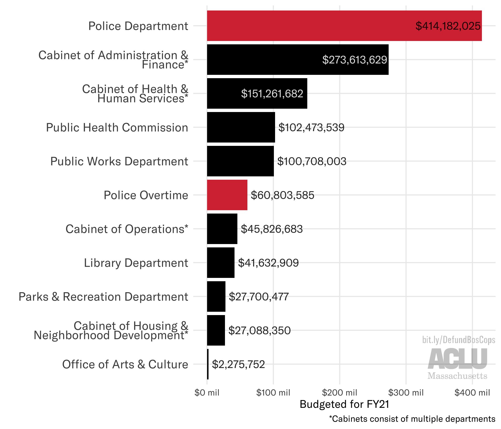
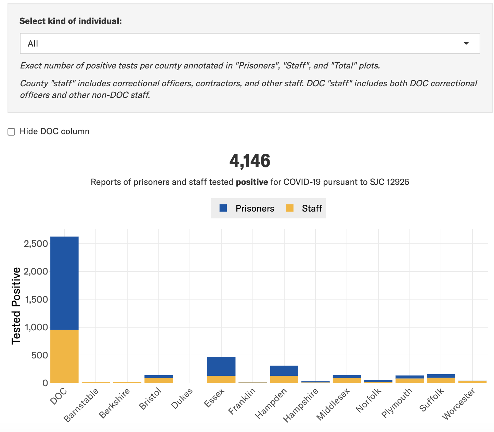
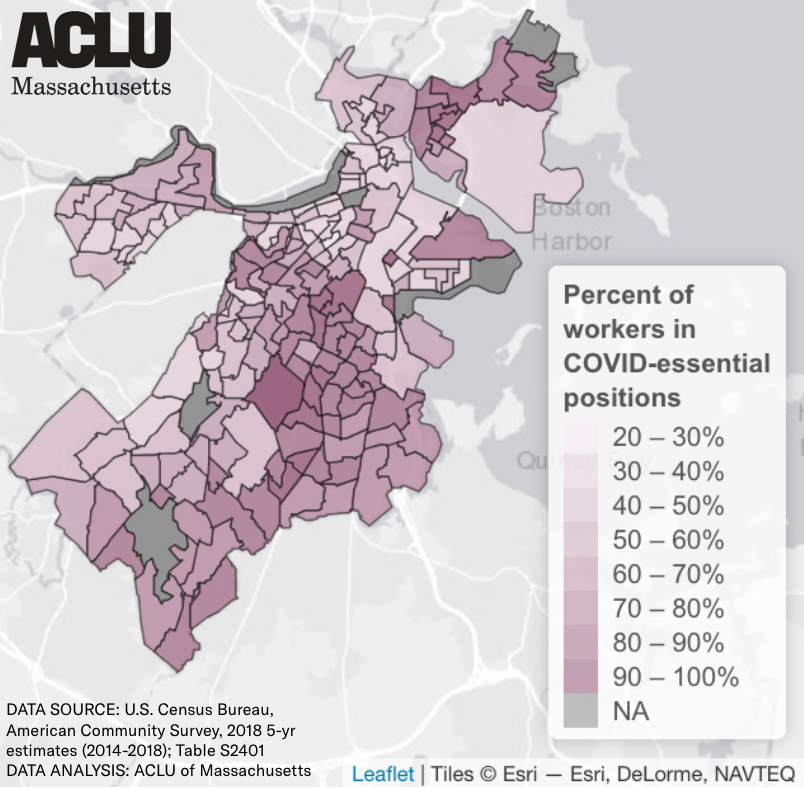
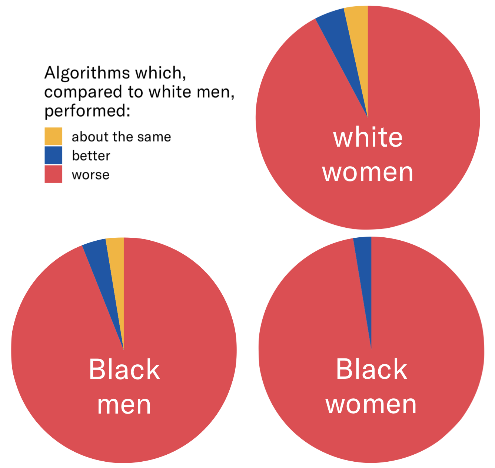

BOSTON POLICE BUDGET
In response to the murders of George Floyd, Breonna Taylor, Ahmaud Arbery, and Tony McDade by police in 2020, many Boston advocacy organizations such as the Muslim Justice League lobbied the Boston City Council to defund police. In support of these lobbying efforts, ACLUM conducted a detailed analysis of the Boston Police Department's $414 million proposed FY21 budget.READ ABOUT IT


COVID-19 IN PRISONS & JAILS
On March 24, 2020, the ACLU of Massachusetts filed an emergency petition with the Supreme Judicial Court, calling for immediate action to prevent the spread of COVID-19 in prisons and jails. The Court's ruling opinion required all prison and jails across MA to provide daily reports on the state of COVID-19 in their facilities. In an effort to make these data available to the public and perform preliminary analysis of trends, ACLUM developed a dynamic web-based tracker.VIEW TRACKER

RACE, OCCUPATION, AND COVID-19
Analysis by the ACLU of Massachusetts compares Boston Public Health Commission data on the distribution of COVID-19 cases across Boston to census data on race and occupation type. We demonstrate that COVID-19 is disproportionately concentrated within communities of color where high percentages of workers are in essential positions.READ ABOUT IT

BIASED FACIAL RECOGNITION
In December 2019, the non-partisan federal National Institute of Standards and Technology (NIST) published a landmark study presenting further evidence that facial recognition algorithms perform more poorly when examining the faces of women, people of color, the elderly, and children. ACLUM conducted a meta-analysis of the study, highlighting the widespread bias apparent in almost all tested algorithms.READ ABOUT IT